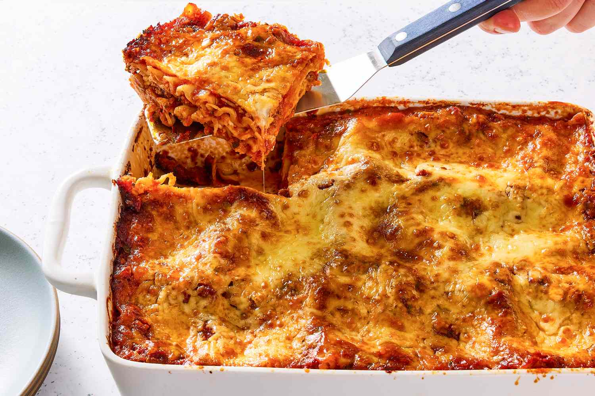

Lasagna Recipes
Home

Description
This classic lasagna is layered with rich meaty tomato sauce, creamy béchamel (or ricotta mixture), and sheets of tender pasta — all baked until bubbly and golden. It's a comforting, family-friendly dish that can be assembled ahead of time and baked when you're ready.
The recipe below includes optional béchamel instructions; if you prefer a quicker method, swap béchamel for ricotta mixed with an egg and some grated Parmesan. Serve with a simple green salad and crusty bread.
Ingredients
- 12 lasagna noodles (or no-boil lasagna sheets)
- 2 tbsp olive oil
- 1 medium onion, finely chopped
- 2 garlic cloves, minced
- 500 g (about 1 lb) ground beef or a mix of beef and pork
- 800 g (about 28 oz) crushed tomatoes or tomato passata
- 2 tbsp tomato paste
- 1 tsp dried oregano, 1 tsp dried basil (or a handful fresh)
- Salt and pepper, to taste
- 250 g (about 9 oz) ricotta (optional) or béchamel (see below)
- 200 g (about 7 oz) shredded mozzarella
- 50 g (about 1/2 cup) grated Parmesan
- Fresh basil or parsley for garnish (optional)
Steps
- Preheat the oven to 190°C (375°F). If using regular lasagna noodles, cook them in salted boiling water to al dente according to package directions, then drain and lay flat on a sheet of parchment.
- Make the meat sauce: heat olive oil in a skillet over medium heat. Add onion and cook until softened, 4–5 minutes. Add garlic and cook 30 seconds more. Add ground meat and brown until no longer pink.
- Stir in tomato paste, crushed tomatoes, oregano, and basil. Simmer for 15–20 minutes to thicken. Season to taste with salt and pepper.
- Optional — make a simple béchamel: melt 3 tbsp butter in a saucepan, whisk in 3 tbsp flour and cook 1 minute. Gradually whisk in 2 cups milk, simmer until thickened. Season with salt, pepper, and a pinch of nutmeg. Or: use ricotta mixed with 1 egg and a little salt for a quicker layer.
- Assemble the lasagna in a 9x13-inch (or similar) baking dish: spread a thin layer of meat sauce on the bottom, add a layer of noodles, spread some béchamel or ricotta, sprinkle a little mozzarella and Parmesan, then add more meat sauce. Repeat to make 3 layers, finishing with a generous topping of mozzarella and Parmesan.
- Cover loosely with foil and bake for 25 minutes. Remove foil and bake another 15–20 minutes until cheese is golden and bubbling. Let rest 10–15 minutes before slicing so layers set cleanly.
- Garnish with chopped fresh basil or parsley and serve warm.